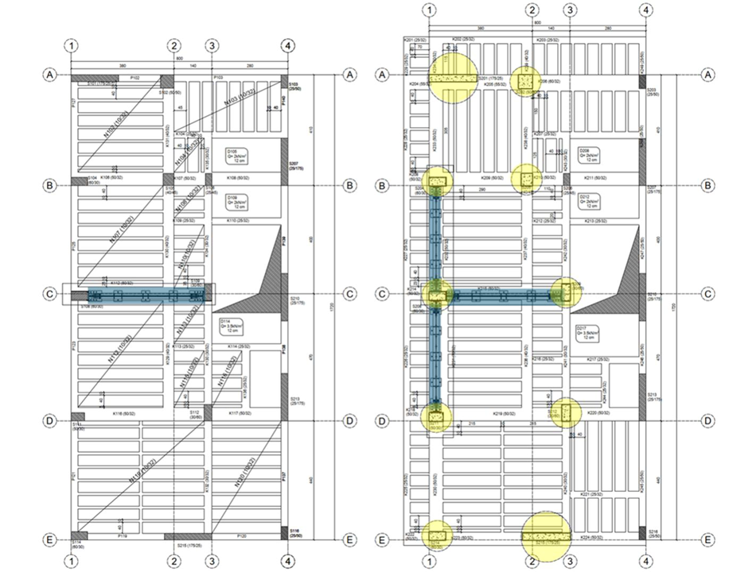
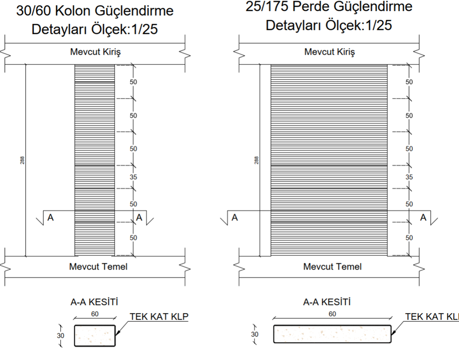
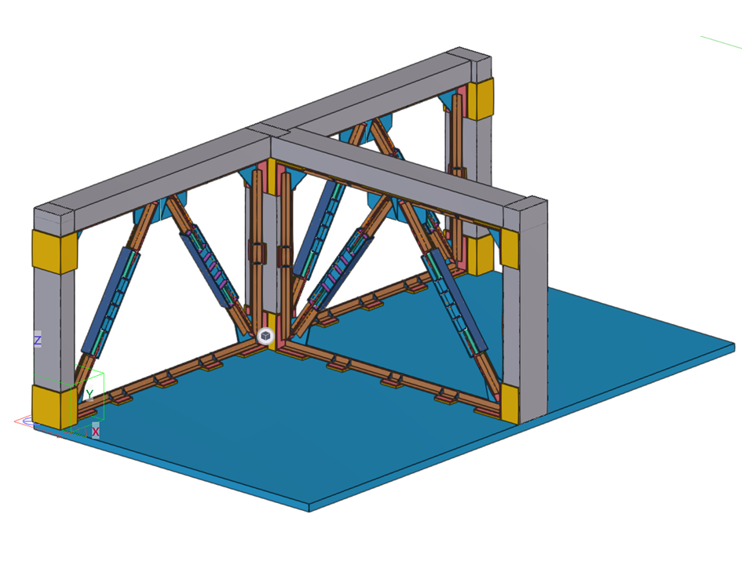
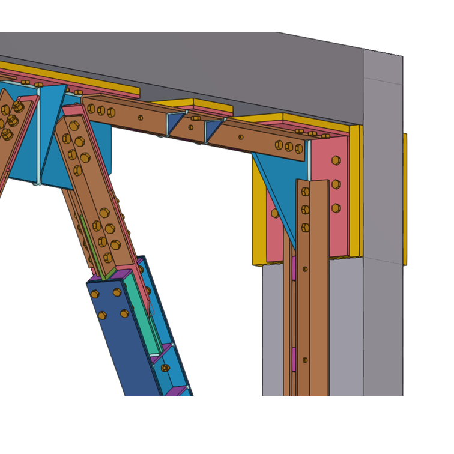
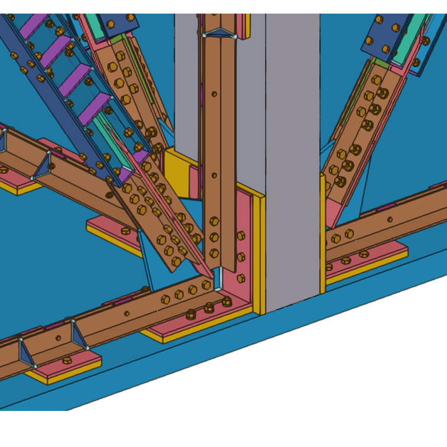
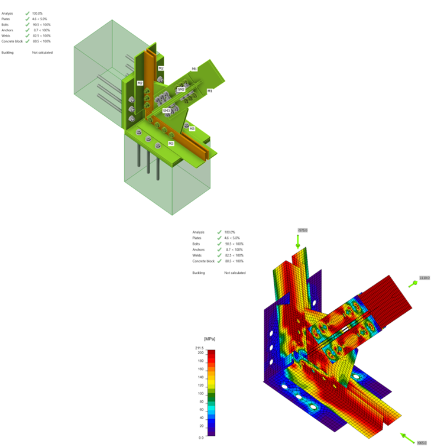
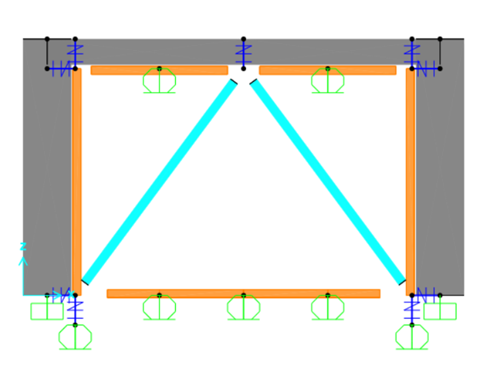

Güçlendirme Stratejisi
Mevcut yapının DD-2 deprem düzeyi için KH performans hedefini sağlayamaması nedeniyle
güçlendirme tasarımı yapılmıştır. Hedef:Yumuşak katta yanal rijitlik artırımı, kritik kolonların kesme
kapasitesinin ve sargılama detaylarının iyileştirilmesi.
| Yöntem | Amaç | Uygulama Bölgesi |
|---|---|---|
| Burkulması Önlenmiş Çelik Çaprazlı Çerçeve | Yanal rijitlik ve dayanım artırımı | Bodrum ve zemin katta seçilen açıklıklar |
| KLP Sargı | Sargılama iyileştirmesi | Zemin katta kritik elemanlar |

KLP Sargı Detayı

Burkulması Önlenmiş Çelik Çaprazlı Çerçeve Detayı

Çerçeve Detayları

Detay 1

Detay 2
Malzeme Özellikleri ve Davranış Modeli
| Parametre | Değer |
|---|---|
| Çelik Sınıfı (Çerçeve) | S235 — fy = 235 MPa |
| Çelik Sınıfı (Çapraz) | S355 — fy = 355 MPa |
| Elastisite Modülü (E) | 210 000 MPa |
| Çapraz Profil | 2L100×20 sırt sırta çift köşebent |
| Bağlantı | Kimyasal ankraj + grout dolgu |
| Tasarım Yaklaşımı | Kapasite tasarımı (TBDY 2018 §9.2.6) |
Kapasite Tasarımı Yaklaşımı: Burkulması Önlenmiş Çapraz elemanlar plastik şekil değiştirme yaptığı anda çerçeve elemanları ve birleşim bölgeleri elastik bölgede kalacak şekilde boyutlandırılmıştır.
IDEA Statica — Birleşim SEM Analizleri

Burkulması Önlenmiş Çaprazlı Çerçeve Modeli

Değerlendirme
Burkulması önlenmiş çelik çaprazlı çerçeve sistemi, kat yanal rijitliğini ve dayanımını yeterli ölçüde
artırmaktadır.Birleşim bölgeleri IDEA Statica ile analiz edilmiş, tüm bağlantı
detayları tasarım kapasiteleri dahilinde kalmıştır.
KLP sargı uygulaması ile kritik kolonların kesme kapasitesi ve sünekliği
iyileştirilmiştir.